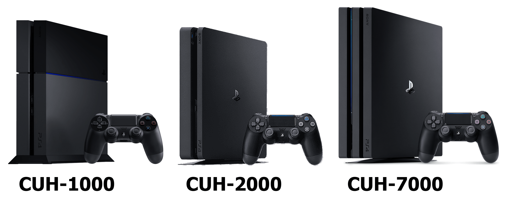

Consolas de videojuegos
Videoconsolas de octava generación
playstation 4
Es la cuarta videoconsola del modelo PlayStation de Sony Computer Entertainment. Forma parte de las videoconsolas de octava generación. Fue anunciada el 20 de febrero de 2013, sin embargo el 10 de junio se presentó el diseño de la consola en el E3 2013. Es la sucesora de la PlayStation 3 y compite con la Wii U de Nintendo y con la nueva consola de Microsoft, la Xbox One. Su lanzamiento fue anunciado el día 20 de septiembre de 2013 en la conferencia de prensa que Sony realizó en la Gamescom 2013 celebrada en la ciudad de Colonia, Alemania; la nueva PS4 estuvo disponible en más de 32 países, a partir del 15 de noviembre en Norte América y en Europa desde el 29 de noviembre.
Xbox One

El 21 de mayo de 2013, Microsoft anunció la Xbox One en un evento en Redmond, Washington. Dicha consola se enfoca en el entretenimiento, incluida la capacidad de pasar la programación de televisión desde un decodificador a través de HDMI y usar una guía de programación electrónica incorporada, y la capacidad de realizar múltiples tareas en la computadora al conectar aplicaciones (como Skype e Internet Explorer) al lado de la pantalla, de manera similar a Windows 8. El controlador tiene «Impulse Triggers» que brindan retroalimentación de la tecnología háptica y la capacidad de grabar y guardar automáticamente los aspectos más destacados del juego. Se desarrolló una versión actualizada de Kinect con una cámara de 1080p y controles de voz ampliados. Originalmente incluido con la consola, se ha excluido desde entonces.
Videoconsolas de novena generación
playstation 5
Es la sucesora de la PlayStation 4 y su lanzamiento mundial fue el 12 y 19 de noviembre de 2020. Es la quinta consola de sobremesa de la marca PlayStation y la tercera en ser diseñada por Mark Cerny. De lanzamiento la consola contó con dos modelos: una PlayStation 5 estándar con lector de discos Blu-ray Ultra HD y una PlayStation 5 Digital Edition sin el lector, además de entrar en competencia con Xbox Series X de Microsoft, en esta novena generación.
Xbox Series X|S

Son unas nuevas consolas de videojuegos desarrolladas por Microsoft. Fueron lanzadas el 10 de noviembre de 2020, y entraron en competencia con la PlayStation 5 de Sony. Microsoft declaró que Xbox Series X sería cuatro veces más potente que Xbox One X; Microsoft también ha promovido el "modo automático de baja latencia" y la "entrada de latencia dinámica" para mejorar la capacidad de respuesta.